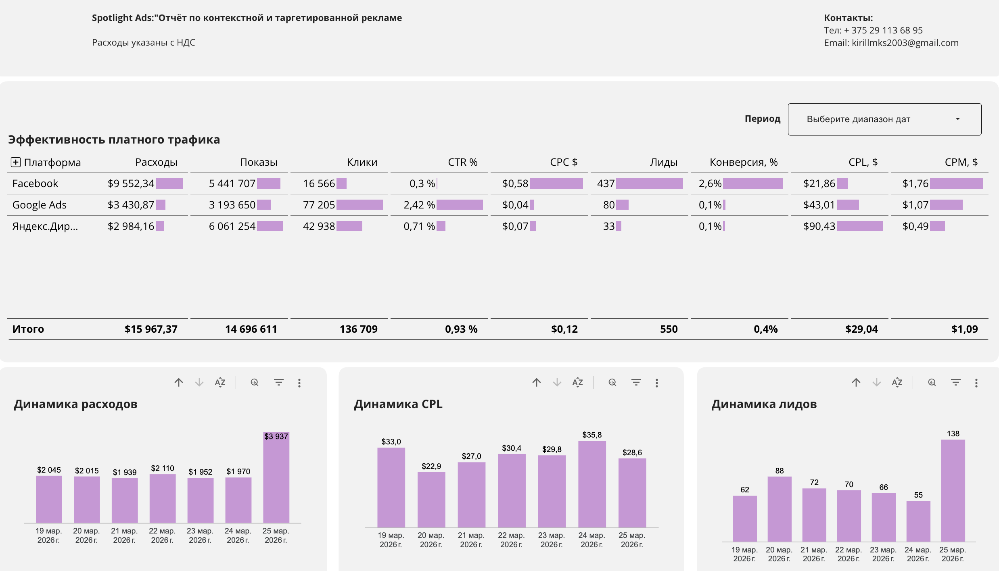

A reporting tool designed for marketing agencies to automate the extraction, processing, and analysis of Google Ads data. The application stores structured data in BigQuery and provides insights via Looker Studio dashboards.
User grants secure access to Google Ads account
Data retrieved via Google Ads API (read-only)
Data processed and stored securely
Reports built in Looker Studio
The application connects to the Google Ads API via secure OAuth authorization. Advertising performance data such as impressions, clicks, cost, and conversions is retrieved daily. The data is processed and securely stored in BigQuery. Processed datasets are then used for analytics and visualization in Looker Studio dashboards.
No personally identifiable information (PII) is collected, stored, or processed.
Example of reporting dashboard generated using this tool:

This tool is used by marketing agencies and analysts to automate reporting for Google Ads accounts. Access is granted by account owners, and the tool operates in read-only mode for analytics purposes only.
All access is authorized via OAuth. API credentials and tokens are handled securely and are never exposed publicly. Data stored in BigQuery is protected using standard cloud security practices.
Email: kirillmks2003@gmail.com